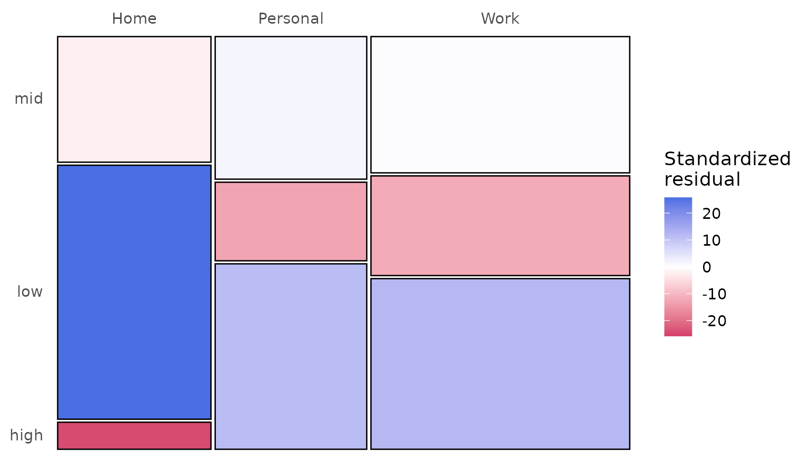
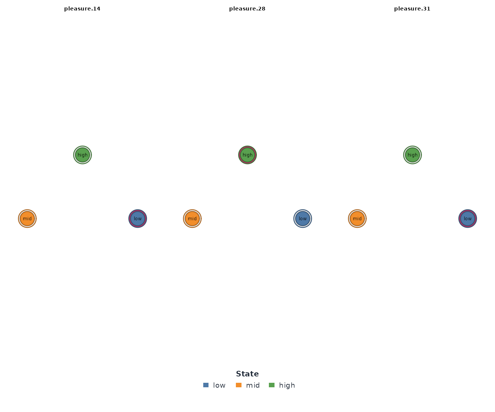
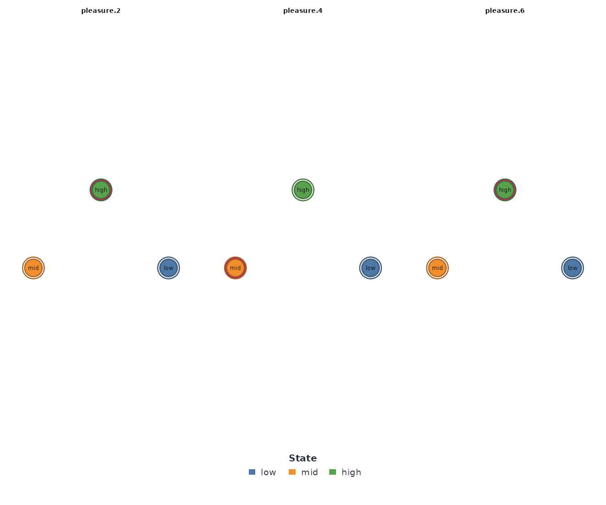
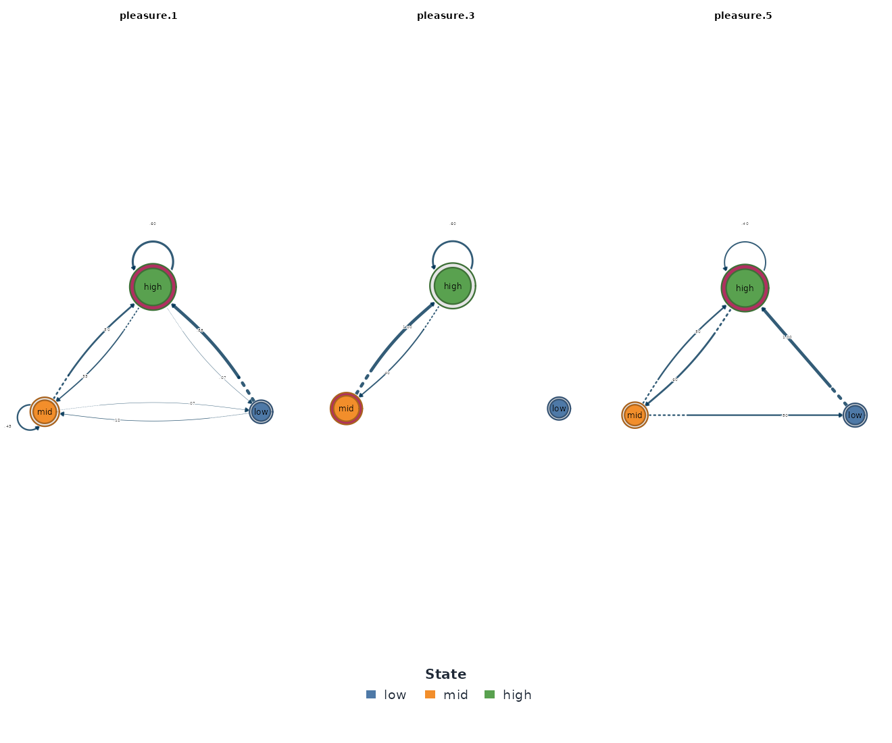
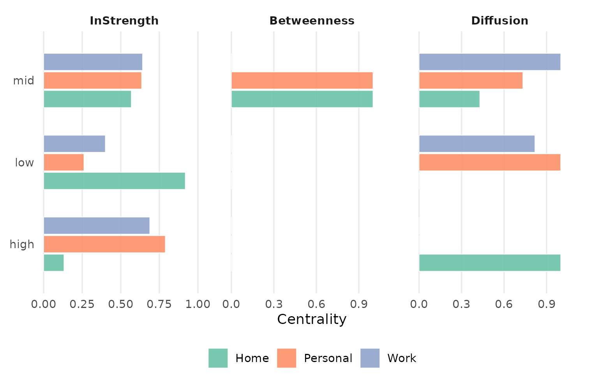
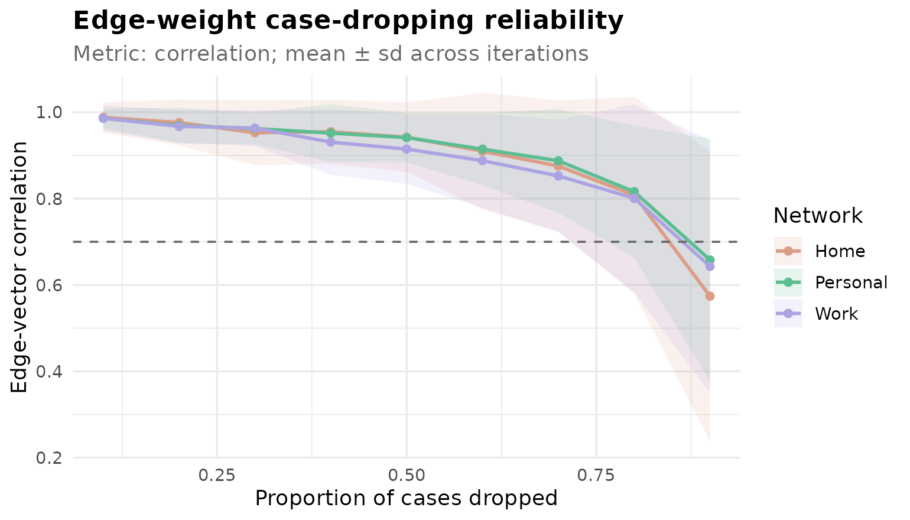

Grouped Transition Models: One Network per Condition
tsn package authors
Source:vignettes/group-models.Rmd
group-models.RmdThe question
Does the same person move between states differently under different
conditions? The motivation study measured momentary
pleasure up to seven times a day for almost three years, and each
measurement records where it was taken: at home, at work, in personal
time, or elsewhere. A single transition network estimated from all of it
would answer how pleasure moves between low,
mid, and high on average — and would
erase exactly the distinction the context column exists to draw.
The group argument of ts_tna() and its
siblings answers the conditional question instead: one network per
context, all cut from one shared state alphabet, packaged so that
Nestimate’s grouped verbs compare them directly.
One call, one network per context
group names a column of the data. Every level of that
column becomes its own fully estimated ts_tna model.
by_context <- ts_tna(
motivation,
series = "pleasure",
group = "task_context_type",
labels = c("low", "mid", "high")
)
by_context
#> Group Networks (4 groups, group_col: task_context_type)
#>
#> Group Nodes Edges Weights
#> Home 3 9 [0.040, 0.762]
#> Other 3 1 [1.000, 1.000]
#> Personal 3 9 [0.065, 0.664]
#> Work 3 9 [0.156, 0.518]Four contexts, four networks, and one of them is already suspicious:
Other carries a single edge with weight 1.000.
as.data.frame() with what = "groups" is the
tidy index of how much data stands behind each network, and it explains
that edge.
as.data.frame(by_context, what = "groups")
#> group type sequences observations states edges
#> 1 Home tna 832 1324 3 9
#> 2 Other tna 2 3 3 1
#> 3 Personal tna 822 1309 3 9
#> 4 Work tna 976 2235 3 9Other holds three observations in two sequences — one
transition in total. A transition probability estimated from one
transition is not a result; it is a level of the column that happens to
exist. Every grouped analysis should start by reading this table. Here
the fix is to leave Other out and rebuild.
contexts <- subset(motivation, task_context_type != "Other")
by_context <- ts_tna(
contexts,
series = "pleasure",
group = "task_context_type",
labels = c("low", "mid", "high")
)
as.data.frame(by_context, what = "groups")
#> group type sequences observations states edges
#> 1 Home tna 832 1324 3 9
#> 2 Personal tna 822 1309 3 9
#> 3 Work tna 976 2235 3 9Three contexts remain, each backed by 1,309 to 2,235 observations.
The sequences column deserves attention before anything
else is read, and the next two sections explain the two design rules
that produce it.
Why not subset the data and build each model by hand?
Subsetting looks equivalent: keep the Home rows, call
ts_tna() on them, repeat per context. It is not equivalent,
and it fails in two distinct ways.
home_alone <- ts_tna(
subset(motivation, task_context_type == "Home"),
series = "pleasure",
labels = c("low", "mid", "high")
)
summary(series_networks(home_alone))
#> series type observations states edges
#> 1 pleasure tna 1324 3 9First failure: the subset welds broken time back together
The hand-built model holds all 1,324 home measurements as one sequence — the single row above. But the study alternates contexts from one beep to the next, so the home measurements are not consecutive: the grouped index showed them forming 832 separate runs. One unbroken sequence of 1,324 observations contains 1,323 transitions; 832 runs of 1,324 observations contain only 1,324 − 832 = 492. The hand-built model therefore counts 831 transitions — sixty-three percent of its total — between measurements that were never adjacent in time. Each one joins the end of one home visit to the start of the next, across an intervening trip to work or elsewhere, and each one is dynamics that never happened.
The grouped model never counts them. A sequence is cut at every change of group, so a transition is only ever counted between genuinely consecutive measurements within one context. The transition across a context change is dropped from both groups, because it belongs to neither.
Second failure: each subset learns its own thresholds
The second failure is quieter. The default
discretization = "quantile" cuts at the tertiles of
whatever data it is given, so the hand-built home model learns cut
points from home measurements alone:
state_distribution(home_alone)
#> group state count proportion
#> 1 all low 494 0.3731118
#> 2 all high 441 0.3330816
#> 3 all mid 389 0.2938066By construction, roughly a third of home measurements land in each
state — 37.3% low, 33.3% high. Now the same
measurements inside the grouped model, which cut the states from the
pooled series before splitting:
state_distribution(by_context)
#> group state count proportion
#> 1 Home low 827 0.62462236
#> 2 Home mid 409 0.30891239
#> 3 Home high 88 0.06646526
#> 4 Personal high 597 0.45607334
#> 5 Personal mid 459 0.35064935
#> 6 Personal low 253 0.19327731
#> 7 Work high 938 0.41968680
#> 8 Work mid 749 0.33512304
#> 9 Work low 548 0.24519016On the shared scale, home is not one-third low: it is
62.5% low and only 6.6%
high. The hand-built model erased that fact by defining
low as “low for a home measurement”. The grouped model
keeps one definition of low for everyone, which is the only
definition under which “Home has more low pleasure than Personal” is
even a well-formed claim.
The comparison across the three contexts is now worth reading on its
own: pleasure at home is low on 62.5% of measurements and
high on 6.6%; personal time reverses the ordering
(high 45.6%, low 19.3%); work sits between the
two on all three states. The mosaic view draws that table:
mosaic_plot(by_context)
The same discipline is available without group by
passing explicit breaks, and that is the right tool when
thresholds carry outside meaning (the companion vignette
vignette("nestimate-workflow", package = "tsn") cuts step
counts at 5,000 and 10,000 steps for exactly that reason).
group automates the discipline when the comparison, not the
threshold, is the point.
The collection is data
Every view of the grouped model is a data frame with a leading
group column. The default view is the edge list:
head(as.data.frame(by_context), 9)
#> group from to weight
#> 1 Home low low 0.76160991
#> 2 Home mid low 0.43661972
#> 3 Home high low 0.48148148
#> 4 Home low mid 0.19814241
#> 5 Home mid mid 0.47183099
#> 6 Home high mid 0.37037037
#> 7 Home low high 0.04024768
#> 8 Home mid high 0.09154930
#> 9 Home high high 0.14814815Because all groups share one alphabet, a single edge can be read across contexts:
subset(as.data.frame(by_context), from == "low" & to == "high")
#> group from to weight
#> 7 Home low high 0.04024768
#> 16 Personal low high 0.35064935
#> 25 Work low high 0.29051988The probability of jumping from low directly to
high is 0.040 at home, 0.351 in personal time, and 0.291 at
work: at home, low pleasure almost never resolves upward in one step.
what = "series" returns the per-observation table behind
the networks, with the run-level sequence IDs.
head(as.data.frame(by_context, what = "series"))
#> group id time value state
#> 1 Home pleasure.14 184 5 low
#> 2 Home pleasure.28 221 24 high
#> 3 Home pleasure.31 224 8 low
#> 4 Home pleasure.34 233 4 low
#> 5 Home pleasure.36 237 15 mid
#> 6 Home pleasure.38 245 16 midsummary() adds Nestimate’s network-metric panel, one
column per group:
summary(by_context)
#> Network metrics by group:
#> metric Home Personal Work
#> Node Count 3 3 3
#> Edge Count 9 9 9
#> Network Density 1 1 1
#> Mean Distance 0.2697 0.2809 0.2882
#> Mean Out-Strength 1 1 1
#> SD Out-Strength 0.7008 0.4528 0.2058
#> Mean In-Strength 1 1 1
#> SD In-Strength 0 0 0
#> Mean Out-Degree 3 3 3
#> SD Out-Degree 0 0 0
#> Centralization (Out-Degree) 0 0 0
#> Centralization (In-Degree) 0 0 0
#> Reciprocity 1 1 1Most rows are structural constants for a full 3-state network, but one is not: the standard deviation of out-strength falls from 0.70 at home through 0.45 in personal time to 0.21 at work. Home’s outgoing probabilities are the most polarized — from any state, one destination dominates — while work’s are the most evenly spread. That single row anticipates the entropy analysis below.
Drawing the networks
There is no single picture of a grouped model; plot()
draws one selected group with the full plot.ts_tna()
surface.
plot(by_context, group = "Home", type = "network")
plot(by_context, group = "Personal", type = "network")
plot(by_context, group = "Work", type = "network")
Because the three networks share one node set, the figures are
directly comparable: the heavy edges converge on low at
home (low → low is 0.762) and on high in
personal time (high → high is 0.664), while the work
network’s weights are visibly more even — no edge above 0.518.
Dynamics, not composition alone
The state distributions above describe where the contexts spend their time. The networks describe how they move, and the two can disagree.
Mean first passage times
passage_time() reports, per group, the expected number
of steps to reach each state from each other state (Kemeny & Snell,
1976).
passage_time(by_context)
#> Mean First Passage Times -- 3 groups: Home, Personal, Work
#>
#> --- Home ---
#> Mean First Passage Times (3 states)
#>
#> low mid high
#> low 1.5 4.9 18.4
#> mid 2.3 3.5 17.1
#> high 2.2 3.9 16.2
#>
#> Stationary distribution:
#> low mid high
#> 0.6509 0.2874 0.0616
#>
#> --- Personal ---
#> Mean First Passage Times (3 states)
#>
#> low mid high
#> low 7.3 3.2 2.6
#> mid 8.2 3.2 2.4
#> high 9.6 3.6 1.8
#>
#> Stationary distribution:
#> low mid high
#> 0.1361 0.3134 0.5505
#>
#> --- Work ---
#> Mean First Passage Times (3 states)
#>
#> low mid high
#> low 4.1 3.1 3.1
#> mid 4.9 3.0 2.7
#> high 5.4 3.1 2.4
#>
#> Stationary distribution:
#> low mid high
#> 0.2434 0.3342 0.4224At home, low is reached from anywhere within about two
steps, while high takes sixteen to eighteen — low pleasure
at home is an attractor. Personal time is the mirror image:
high is two to three steps away from everything,
low seven to ten. Work reaches high in about
three steps. The stationary distributions agree with the composition
table, which they should — but the passage times add the direction of
pull, not only the destination.
Entropy: how predictable is each context?
transition_entropy(by_context)
#> Transition Entropy - 3 groups: Home, Personal, Work
#>
#> Entropy rate per group:
#> Home Personal Work
#> 1.0943 1.3269 1.5096The entropy rate is in bits, with log2(3) = 1.585 as the
ceiling for three states. Home, at 1.09, is the most predictable
context: knowing the current state says a lot about the next one
(mostly, that it will be low again). Work, at 1.51, runs
close to the ceiling — from any state, the next work measurement is
nearly a three-way coin toss. Structure and pleasantness are different
axes: home is the most predictable context and also the least
pleasant one.
Centrality per group
context_centrality <- net_centrality(by_context)
#> centralities computed excluding loops (diagonal). Pass `loops = TRUE` to include self-transitions.
context_centrality
#> $Home
#> state InStrength Betweenness Diffusion
#> low low 0.9181012 0 0.0000000
#> mid mid 0.5685128 1 0.4288861
#> high high 0.1317970 0 1.0000000
#>
#> $Personal
#> state InStrength Betweenness Diffusion
#> low low 0.2612844 0 1.0000000
#> mid mid 0.6351881 1 0.7327731
#> high high 0.7888516 0 0.0000000
#>
#> $Work
#> state InStrength Betweenness Diffusion
#> low low 0.4000422 0 0.8177884
#> mid mid 0.6413604 0 1.0000000
#> high high 0.6880507 0 0.0000000
#>
#> attr(,"measures")
#> [1] "InStrength" "Betweenness" "Diffusion"
#> attr(,"class")
#> [1] "net_centrality_group" "list"The in-strength ordering flips between contexts: low
dominates at home (0.92), high dominates in personal time
(0.79). The message printed above the tables matters for any transition
network: self-transitions are excluded by default, because the diagonal
is usually the largest entry and would otherwise drown the between-state
structure. The result has its own plot method, which puts the three
groups on one panel per measure:
plot(context_centrality)
Edge betweenness
net_edge_betweenness() scores each edge by the shortest
paths that cross it. On a grouped model it runs group-wise:
net_edge_betweenness(by_context)
#> Group Networks (3 groups)
#>
#> Group Nodes Edges Weights
#> Home 3 5 [1.000, 2.000]
#> Personal 3 5 [1.000, 2.000]
#> Work 3 6 [1.000, 1.000]Home and Personal each concentrate their traffic on five edges while
Work spreads it across six with uniform load — the betweenness
restatement of the polarized-versus-even pattern. One caveat: this verb
returns a plain netobject_group (the
ts_tna_group subclass is dropped), so apply tsn’s tidy
accessors before this step, not after it.
Are the differences real?
Pairwise permutation tests
permutation() on a grouped model runs every pairwise
comparison, shuffling sequences between the two groups to build a null
distribution per edge.
comparison <- permutation(by_context, iter = 1000, seed = 2026)
comparison
#> Grouped Permutation Test
#> Groups: Home vs Personal, Home vs Work, Personal vs Work
#> Use summary() on each element for edge-level results.summary() is the tidy edge-level table across all three
pairs:
summary(comparison)
#> group from to weight_x weight_y diff effect_size
#> 1 Home vs Personal low low 0.76160991 0.28571429 0.475895621 9.6011811
#> 2 Home vs Personal low mid 0.19814241 0.36363636 -0.165493949 -3.9079590
#> 3 Home vs Personal low high 0.04024768 0.35064935 -0.310401673 -9.6318468
#> 4 Home vs Personal mid low 0.43661972 0.19662921 0.239990505 3.9297924
#> 5 Home vs Personal mid mid 0.47183099 0.36516854 0.106662447 2.0072211
#> 6 Home vs Personal mid high 0.09154930 0.43820225 -0.346652951 -6.4135986
#> 7 Home vs Personal high low 0.48148148 0.06465517 0.416826309 10.2551933
#> 8 Home vs Personal high mid 0.37037037 0.27155172 0.098818646 1.7043584
#> 9 Home vs Personal high high 0.14814815 0.66379310 -0.515644955 -8.1556584
#> 10 Home vs Work low low 0.76160991 0.39449541 0.367114494 8.1841788
#> 11 Home vs Work low mid 0.19814241 0.31498471 -0.116842295 -3.3153932
#> 12 Home vs Work low high 0.04024768 0.29051988 -0.250272200 -7.1541625
#> 13 Home vs Work mid low 0.43661972 0.24444444 0.192175274 3.5784102
#> 14 Home vs Work mid mid 0.47183099 0.35802469 0.113806295 2.7796439
#> 15 Home vs Work mid high 0.09154930 0.39753086 -0.305981568 -5.9452449
#> 16 Home vs Work high low 0.48148148 0.15559772 0.325883759 7.1524791
#> 17 Home vs Work high mid 0.37037037 0.32637571 0.043994659 1.0993855
#> 18 Home vs Work high high 0.14814815 0.51802657 -0.369878417 -7.1868514
#> 19 Personal vs Work low low 0.28571429 0.39449541 -0.108781127 -2.0307871
#> 20 Personal vs Work low mid 0.36363636 0.31498471 0.048651654 1.0328852
#> 21 Personal vs Work low high 0.35064935 0.29051988 0.060129473 1.1254199
#> 22 Personal vs Work mid low 0.19662921 0.24444444 -0.047815231 -1.0647540
#> 23 Personal vs Work mid mid 0.36516854 0.35802469 0.007143848 0.1755167
#> 24 Personal vs Work mid high 0.43820225 0.39753086 0.040671383 0.9161396
#> 25 Personal vs Work high low 0.06465517 0.15559772 -0.090942551 -3.1129284
#> 26 Personal vs Work high mid 0.27155172 0.32637571 -0.054823987 -1.6424138
#> 27 Personal vs Work high high 0.66379310 0.51802657 0.145766538 3.9197122
#> p_value sig
#> 1 0.000999001 TRUE
#> 2 0.000999001 TRUE
#> 3 0.000999001 TRUE
#> 4 0.000999001 TRUE
#> 5 0.038961039 TRUE
#> 6 0.000999001 TRUE
#> 7 0.000999001 TRUE
#> 8 0.083916084 FALSE
#> 9 0.000999001 TRUE
#> 10 0.000999001 TRUE
#> 11 0.002997003 TRUE
#> 12 0.000999001 TRUE
#> 13 0.000999001 TRUE
#> 14 0.009990010 TRUE
#> 15 0.000999001 TRUE
#> 16 0.000999001 TRUE
#> 17 0.271728272 FALSE
#> 18 0.000999001 TRUE
#> 19 0.047952048 TRUE
#> 20 0.308691309 FALSE
#> 21 0.269730270 FALSE
#> 22 0.311688312 FALSE
#> 23 0.880119880 FALSE
#> 24 0.375624376 FALSE
#> 25 0.000999001 TRUE
#> 26 0.100899101 FALSE
#> 27 0.000999001 TRUEThe pattern is sharp. Home differs from Personal on eight of nine
edges and from Work on eight of nine, most at the smallest p-value the
permutation resolution allows (0.001). Personal and Work are much
closer: only three edges separate them, and the largest of those
differences is the retention of high —
high → high is 0.66 in personal time against 0.52 at work
(p = 0.001). The conclusion is not “everything differs from everything”:
home has genuinely distinct dynamics, while personal time and work share
most of their structure except how long a good state lasts.
A metric panel for one pair
compare_model() picks two groups by name and returns a
panel of matrix comparison metrics.
compare_model(by_context, i = "Home", j = "Personal")
#> Network comparison
#> ==================
#> Summary metrics:
#> category metric value
#> Weight Deviations Mean Abs. Diff. 0.2974
#> Weight Deviations Median Abs. Diff. 0.3104
#> Weight Deviations RMS Diff. 0.3315
#> Weight Deviations Max Abs. Diff. 0.5156
#> Weight Deviations Rel. Mean Abs. Diff. 0.8921
#> Weight Deviations CV Ratio 1.406
#> Correlations Pearson -0.5445
#> Correlations Spearman -0.55
#> Correlations Kendall -0.3889
#> Correlations Distance 0.4772
#> Dissimilarities Euclidean 0.9944
#> Dissimilarities Manhattan 2.676
#> Dissimilarities Canberra 4.256
#> Dissimilarities Bray-Curtis 0.4461
#> Dissimilarities Frobenius 0.8119
#> Similarities Cosine 0.6293
#> Similarities Jaccard 0.3831
#> Similarities Dice 0.5539
#> Similarities Overlap 0.5539
#> Similarities RV 0.3794
#> Pattern Similarities Rank Agreement 0.8333
#> Pattern Similarities Sign Agreement 1
#>
#> Network metrics (x vs y):
#> metric x y
#> Node Count 3 3
#> Edge Count 9 9
#> Network Density 1 1
#> Mean Distance 0.2697 0.2809
#> Mean Out-Strength 1 1
#> SD Out-Strength 0.7008 0.4528
#> Mean In-Strength 1 1
#> SD In-Strength 0 0
#> Mean Out-Degree 3 3
#> SD Out-Degree 0 0
#> Centralization (Out-Degree) 0 0
#> Centralization (In-Degree) 0 0
#> Reciprocity 1 1The Pearson correlation between the two weight matrices is
−0.54: the home and personal-time networks are not
merely different, they are inversely related — the transitions that are
strong in one are weak in the other. The mean absolute edge difference
is 0.30 and the largest single gap is 0.52 (the high → high
retention). Always name i and j: with more
than two groups there is no meaningful default pair.
Bootstrap and Bayesian certainty per group
bootstrap_network() on the collection resamples
sequences within each group; certainty() reaches a similar
verdict from a Dirichlet posterior, without resampling.
bootstrap_network(by_context, iter = 200, seed = 2026)
#> Edge Home Personal Work
#> ------------------------------------------------------
#> mid→mid 0.470 0.370 0.356
#>
#> Grouped Bootstrap [3 groups | 200 iterations | 95% CI]
#> Home 4 sig / 9 total
#> Personal 3 sig / 9 total
#> Work 8 sig / 9 total
#> Shared (all groups) 1 edges
set.seed(2026)
certainty(by_context)
#> Edge Home Personal Work
#> ------------------------------------------------------
#> mid→mid 0.470 0.365 0.358
#>
#> Grouped Bootstrap [3 groups | NA iterations | 95% CI]
#> Home 4 sig / 9 total
#> Personal 4 sig / 9 total
#> Work 9 sig / 9 total
#> Shared (all groups) 1 edgesWork, with 976 sequences and 2,235 observations, keeps eight of nine
bootstrap edges and all nine posterior-certain ones; Home and Personal
keep three to four under either criterion. The groups table from the
start of this vignette predicted this: equal-looking observation counts
do not buy equal precision when the observations arrive in short runs,
because resampling operates on runs, not measurements. Reading
sequences first is not a formality.
Is first order enough, per group?
Each group’s network assumes the next state depends only on the
current one. markov_order_test() (after Anderson &
Goodman, 1957) checks that assumption group by group.
set.seed(2026)
markov_order_test(by_context)
#> Markov Order Test -- 3 groups: Home, Personal, Work
#>
#> --- Home ---
#> Markov Order Test [within-w permutation, n_perm = 500, alpha = 0.050]
#> 300 sequences / 792 observations / 3 states
#>
#> Selected order BIC: 1 AIC: 3 permutation-LRT: 1
#>
#> order loglik AIC BIC df g2 p_permutation p_asymptotic significant
#> 0 -641.97 1287.95 1297.30 NA NA NA NA NA
#> 1 -616.95 1249.90 1287.30 4 49.98 0.001996008 3.638784e-10 TRUE
#> 2 -605.72 1251.44 1344.94 12 15.62 0.287425150 2.090956e-01 FALSE
#> 3 -594.94 1239.89 1356.75 10 16.43 0.359281437 8.793532e-02 FALSE
#>
#> --- Personal ---
#> Markov Order Test [within-w permutation, n_perm = 500, alpha = 0.050]
#> 306 sequences / 793 observations / 3 states
#>
#> Selected order BIC: 1 AIC: 1 permutation-LRT: 1
#>
#> order loglik AIC BIC df g2 p_permutation p_asymptotic significant
#> 0 -793.46 1590.93 1600.28 NA NA NA NA NA
#> 1 -771.13 1558.26 1595.67 4 43.02 0.001996008 1.023045e-08 TRUE
#> 2 -760.74 1567.48 1675.03 12 15.37 0.297405190 2.219595e-01 FALSE
#> 3 -743.05 1574.09 1779.83 24 29.95 0.508982036 1.864762e-01 FALSE
#>
#> --- Work ---
#> Markov Order Test [within-w permutation, n_perm = 500, alpha = 0.050]
#> 512 sequences / 1771 observations / 3 states
#>
#> Selected order BIC: 1 AIC: 1 permutation-LRT: 2
#>
#> order loglik AIC BIC df g2 p_permutation p_asymptotic significant
#> 0 -1912.04 3828.08 3839.04 NA NA NA NA NA
#> 1 -1875.41 3766.81 3810.65 4 72.39 0.001996008 7.084272e-15 TRUE
#> 2 -1860.87 3773.74 3916.20 12 27.89 0.003992016 5.733952e-03 TRUE
#> 3 -1835.40 3828.81 4261.67 36 48.50 0.205588822 7.966126e-02 FALSEHome and Personal select order 1 on BIC and the permutation LRT; Work’s permutation test flags order 2 while BIC still prefers 1. The first-order models above are adequate summaries for home and personal time; for work, yesterday’s state carries some extra information, so its network should be read as a one-step summary rather than the full process.
Pruning and stability
net_prune() applies group-wise and returns the same
class, so a pruned collection flows back into every verb above.
net_prune(by_context, method = "threshold", threshold = 0.3)
#> Group Networks (3 groups)
#>
#> Group Nodes Edges Weights
#> Home 3 6 [0.148, 0.762]
#> Personal 3 6 [0.286, 0.664]
#> Work 3 6 [0.315, 0.518]Each context keeps six of its nine edges at a 0.3 threshold. Prune after testing, not before: the permutation table above is exactly the kind of result a premature prune would have deleted edges from.
Two stability checks ask whether the results would survive a smaller
sample. centrality_stability() tracks the centrality
ordering under case dropping;
casedrop_reliability() tracks the edge weights themselves
(both follow the case-drop logic of Epskamp, Borsboom & Fried,
2018).
set.seed(2026)
centrality_stability(by_context, iter = 100)
#> Centrality Stability (3 networks, threshold = 0.70)
#> InStrength OutStrength Betweenness
#> Home 0.7 0.8 0.4
#> Personal 0.8 0.8 0.8
#> Work 0.7 0.6 NA
context_reliability <- casedrop_reliability(by_context, iter = 100,
seed = 2026)
context_reliability
#> Edge-weight Case-dropping Stability (3 networks, threshold = 0.70)
#> n_cases n_edges CS
#> Home 832 6 0.6
#> Personal 822 6 0.6
#> Work 976 6 0.6
plot(context_reliability)
In-strength and out-strength orderings hold at 0.6 to 0.8 across
groups, and every group’s edge weights carry a CS-coefficient of 0.6 —
above the 0.5 bar for acceptable, short of the 0.7 bar for excellent.
Work’s betweenness column is NA because its betweenness
scores are degenerate (the centrality table above showed zeros); a
coefficient cannot be computed for an ordering that does not exist. The
verdict across both checks: these grouped estimates tolerate losing
roughly half their sequences, and claims resting on finer distinctions
than that should not be made from this sample.
What to watch for
Four failure modes, all of which announce themselves:
-
A level with almost no data.
Otherabove: it gets a network because it is a level, and the network means nothing. Thegroupstable is the guard; readsequencesandobservationsbefore edges. - A group column that alternates too fast. Every change of group cuts a sequence, so a column that flips at almost every observation leaves runs of length one and no transitions at all. In the extreme case — a group whose observations are never adjacent — the model warns that the group’s network is empty. This study’s contexts alternate heavily (about 2,630 runs across 4,868 observations) and still leave 487 to 1,259 transitions per context; a faster-alternating column would not.
-
A group whose rows do not survive discretization.
Temporal discretizers such as
ordinaldrop tail rows that cannot fill an embedding window. If that removes a group entirely, the model warns that the group was lost to discretization. A group you excluded yourself viaseriesis not warned about — it was your decision. - Comparing a grouped model with a hand-subset model. The two are not estimates of the same thing, for both reasons in the section above.
When to use which
-
group— the condition already exists as a column, there may be more than two levels, and the comparison itself is the point. Pooled discretization and boundary-safe sequence cutting come built in. -
Two models plus
permutation(x, y)— the split is not a column but a derived rule (a date cutoff, an external roster), and there are exactly two sides. Fix the state alphabet yourself with explicitbreaks, or the comparison inherits the threshold artifact. The companion vignettevignette("nestimate-workflow", package = "tsn")runs this design on the step-count data. -
series_networks()— the unit of comparison is the individual series (one network per participant), not a condition shared across series. - A single pooled model — no conditioning variable at all; the average dynamics are the question.
References
Anderson, T. W., & Goodman, L. A. (1957). Statistical inference about Markov chains. The Annals of Mathematical Statistics, 28(1), 89–110.
Epskamp, S., Borsboom, D., & Fried, E. I. (2018). Estimating psychological networks and their accuracy: A tutorial paper. Behavior Research Methods, 50(1), 195–212.
Kemeny, J. G., & Snell, J. L. (1976). Finite Markov Chains. Springer.